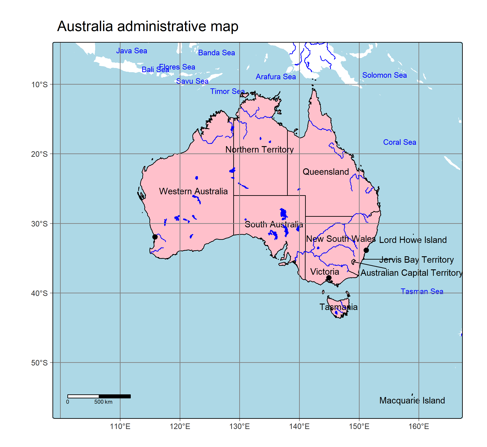

Linking to GEOS 3.12.2, GDAL 3.9.3, PROJ 9.4.1; sf_use_s2() is TRUElibrary(tmap)
# Define the data source folder
root <- "D:/users/platt/shapefile/auxiliary/naturalearth/5.1.2"
# Load shapefiles
marines <- st_read(file.path(root, "10m_physical", "ne_10m_geography_marine_polys.shp.zip"))Reading layer `ne_10m_geography_marine_polys' from data source
`C:\Users\platt\shapefile\auxiliary\naturalearth\5.1.2\10m_physical\ne_10m_geography_marine_polys.shp.zip'
using driver `ESRI Shapefile'
Simple feature collection with 306 features and 37 fields
Geometry type: MULTIPOLYGON
Dimension: XY
Bounding box: xmin: -180 ymin: -85.19206 xmax: 179.9999 ymax: 90
Geodetic CRS: WGS 84marines <- marines[st_is_valid(marines), ] # Keep only valid geometries
sea_areas <- marines[marines$featurecla == "sea", ]
countries <- st_read(file.path(root, "10m_cultural", "ne_10m_admin_0_countries.shp.zip"))Reading layer `ne_10m_admin_0_countries' from data source
`C:\Users\platt\shapefile\auxiliary\naturalearth\5.1.2\10m_cultural\ne_10m_admin_0_countries.shp.zip'
using driver `ESRI Shapefile'
Simple feature collection with 258 features and 168 fields
Geometry type: MULTIPOLYGON
Dimension: XY
Bounding box: xmin: -180 ymin: -90 xmax: 180 ymax: 83.6341
Geodetic CRS: WGS 84
Reading layer `ne_10m_admin_1_states_provinces' from data source
`C:\Users\platt\shapefile\auxiliary\naturalearth\5.1.2\10m_cultural\ne_10m_admin_1_states_provinces.shp.zip'
using driver `ESRI Shapefile'
Simple feature collection with 4596 features and 121 fields
Geometry type: MULTIPOLYGON
Dimension: XY
Bounding box: xmin: -180 ymin: -90 xmax: 180 ymax: 83.6341
Geodetic CRS: WGS 84aus_admin <- admin[admin$admin == "Australia", ]
lakes <- st_read(file.path(root, "10m_physical", "ne_10m_lakes.shp.zip"))Reading layer `ne_10m_lakes' from data source
`C:\Users\platt\shapefile\auxiliary\naturalearth\5.1.2\10m_physical\ne_10m_lakes.shp.zip'
using driver `ESRI Shapefile'
Simple feature collection with 1355 features and 41 fields
Geometry type: MULTIPOLYGON
Dimension: XY
Bounding box: xmin: -165.9656 ymin: -50.66967 xmax: 177.1544 ymax: 81.95521
Geodetic CRS: WGS 84lakes <- lakes[st_is_valid(lakes), ]
rivers <- st_read(file.path(root, "10m_physical", "ne_10m_rivers_lake_centerlines.shp.zip"))Reading layer `ne_10m_rivers_lake_centerlines' from data source
`C:\Users\platt\shapefile\auxiliary\naturalearth\5.1.2\10m_physical\ne_10m_rivers_lake_centerlines.shp.zip'
using driver `ESRI Shapefile'
Simple feature collection with 1473 features and 38 fields
Geometry type: MULTILINESTRING
Dimension: XY
Bounding box: xmin: -164.9035 ymin: -52.15775 xmax: 177.5204 ymax: 75.79348
Geodetic CRS: WGS 84Reading layer `ne_10m_populated_places' from data source
`C:\Users\platt\shapefile\auxiliary\naturalearth\5.1.2\10m_cultural\ne_10m_populated_places.shp.zip'
using driver `ESRI Shapefile'
Simple feature collection with 7342 features and 137 fields
Geometry type: POINT
Dimension: XY
Bounding box: xmin: -179.59 ymin: -90 xmax: 179.3833 ymax: 82.48332
Geodetic CRS: WGS 84cities <- cities[cities$SCALERANK <= 2, ]
cities <- st_filter(cities, aus_bord) # Keep cities within Australia
# Define your bounding box (xmin, ymin, xmax, ymax)
crop_extent <- st_bbox(c(xmin = 100, ymin = -57, xmax = 166, ymax = -5), crs = st_crs(marines))
# Manually adjust label positions
aus_admin$xmod <- 0 # Default no shift
aus_admin$ymod <- 0 # Default no shift
# Shift the label for Australian Capital Territory (adjust these values as needed)
aus_admin$xmod[which(aus_admin$name == "Australian Capital Territory")] <- 5.5 # Move right
aus_admin$ymod[which(aus_admin$name == "Australian Capital Territory")] <- -1 # Move up
aus_admin$xmod[which(aus_admin$name == "Jervis Bay Territory")] <- 5
aus_admin$ymod[which(aus_admin$name == "Lord Howe Island")] <- -0.5
aus_admin$ymod[which(aus_admin$name == "Macquarie Island")] <- -0.5
# Calculate centroids for the line (if not already available)
centroids <- st_centroid(aus_admin) # Get centroids of polygonsWarning: st_centroid assumes attributes are constant over geometriesaus_admin$centroid_x <- st_coordinates(centroids)[,1] # X coordinate of centroid
aus_admin$centroid_y <- st_coordinates(centroids)[,2] # Y coordinate of centroid
# Calculate shifted label positions
aus_admin$label_x <- aus_admin$centroid_x + aus_admin$xmod
aus_admin$label_y <- aus_admin$centroid_y + aus_admin$ymod
### creating lines for labels
act <- aus_admin[aus_admin$name == "Australian Capital Territory", ]
jbt <- aus_admin[aus_admin$name == "Jervis Bay Territory", ]
# extract coordinates
act_coor <- matrix(c(act$centroid_x, act$centroid_y, act$label_x, act$label_y), nrow = 2, byrow = TRUE)
jbt_coor <- matrix(c(jbt$centroid_x, jbt$centroid_y, jbt$label_x, jbt$label_y), nrow = 2, byrow = TRUE)
coor_list <- list(act_coor, jbt_coor)
# creating sf kines
lines <- st_sf(
name = c("ACT", "JBT"),
geometry = st_sfc(lapply(coor_list, st_linestring)),
crs = 4326
)
my_map <- tm_shape(marines, bbox = crop_extent)+
tm_polygons(fill = "lightblue", col = "lightblue") +
tm_shape(sea_areas) +
tm_text("name", col = "blue", size = 0.7) +
tm_shape(aus_admin) +
tm_polygons(fill = "pink",col = "black") +
tm_text("name", size = 0.8, xmod = "xmod", ymod = "ymod") +
tm_shape(lines) +
tm_lines(col = "black", lwd = 1) +
tm_shape(rivers) +
tm_lines(col = "blue") +
tm_shape(lakes) +
tm_polygons(col = "blue", fill = "blue") +
tm_shape(cities) +
tm_dots(size = 0.5) +
tm_graticules(n.x = 5, n.y = 5, col = "gray50", labels.size = 0.7) +
tm_scalebar(position = c("left", "bottom")) +
tm_title("Australia administrative map") +
tm_view(set_bounds = c(110, -45, 0, -5))
# Export to PNG with 300 DPI
tmap_save(my_map, filename = "australia_map_reproduced.png", dpi = 300)[tip] Consider a suitable map projection, e.g. by adding `+ tm_crs("auto")`.
This message is displayed once per session.Scale bar set for latitude km and will be different at the top and bottom of the map.Map saved to australia_map_reproduced.pngResolution: 2190.395 by 2013.336 pixelsSize: 7.301316 by 6.711119 inches (300 dpi)